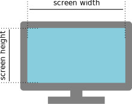
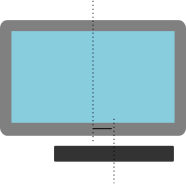
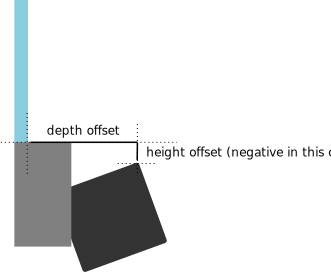

This tool helps you set up the Active Display Area on your eye tracker. The active display area must be configured before the eye tracker can be calibrated.
Guidelines for mounting the eye tracker can be found on the Tobii Developer Zone.
All eye trackers from Tobii measure and report the user's eye-gaze position relative to a planar surface called the Active Display Area. For example, in the common scenario where the eye tracker is mounted on a computer monitor, the active display area should be set to the part of the panel where the image shows.
The active display area is specified as three points in space corresponding to the top left, bottom left, and top right corners. You can either use the setdisplayarea tool to set the active display area, or use the tobiigaze_set_display_area[_async] API call. The setting will be stored in persistent memory on the eye tracker device.
You can use this guide to calculate the active display area if your eye tracker is mounted on a display monitor, or something that resembles a display monitor.
That is, the size of the image that displays on the monitor:
| Screen width: | mm |
| Screen height: | mm |
The value should be zero if the eye tracker is perfectly centered on the screen, a positive value if the eye tracker is to the right of the screen center, or a negative value if the tracker is to the left of the screen center.
Horizontal offset: mm
The depth offset should typically be positive, meaning that the eye tracker is in front of the screen.
The height offset should be zero if the top of the eye tracker is aligned with the bottom of the screen, positive if it is above the bottom of the screen, or negative if it is below the bottom of the screen.
| Depth offset: | mm |
| Height offset: | mm |
Load the default values for:
| Vertical distance optical center to mid front: | mm |
| Distance mid front to top front: | mm |
| Mounting angle: | degrees |